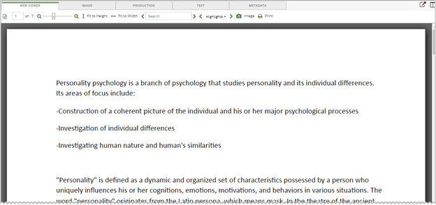
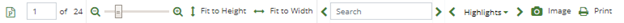
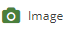

Tip: If necessary, enlarge the Document View window to view the entire toolbar.
The Web Viewer allows for viewing native files such as emails, spreadsheets, and/or word processing documents. You can view them within the Web Viewer or you can view them with the native application if it is previously installed and configured on the machine. Prompts appear if the:
file size exceeds the configured system limit of 12 MB. The native file must be downloaded for review when this is the case.
source file is password protected. Password protected source files cannot be exported.

|
|
Tip: If necessary, enlarge the Document View window to view the entire toolbar. |
Web Viewer Toolbar

To download and open the document in the native application previously installed on the workstation, click the native application's icon. For example, represents on Outlook email.
 displays the current page and total number of pages in the document. To move to a specific page in the document, enter the page number in the box.
displays the current page and total number of pages in the document. To move to a specific page in the document, enter the page number in the box.
Use the zoom slider  to increase or decrease the document size. Position the mouse pointer over the slider to view the current percentage size. The mouse scroll wheel can also be used to adjust the document size.
to increase or decrease the document size. Position the mouse pointer over the slider to view the current percentage size. The mouse scroll wheel can also be used to adjust the document size.
Click  to fit image to the width or height of the view window. Also resets the zoom percentage back to the default settings for the width or the height.
to fit image to the width or height of the view window. Also resets the zoom percentage back to the default settings for the width or the height.
Enter a search term  . All instances of the search term are highlighted in yellow throughout the document. Click the Search arrows < > to move backwards or forwards to locate each highlighted term in the document. Clear the search box to remove the highlighted terms in the document.
. All instances of the search term are highlighted in yellow throughout the document. Click the Search arrows < > to move backwards or forwards to locate each highlighted term in the document. Clear the search box to remove the highlighted terms in the document.
Click  to display the
to display the

The previous figure shows three persistent highlighted group terms. For each group term, the administrator added related key words. For example, related key words for financial may include: returns, deficits, profits, losses, etc. If any of these key words appear in the document, they will be highlighted with the same background color and text color as shown in the menu. The number in the parenthesis next to the group term indicates the number of times any of the key words associated with that group term appear in the document. To view the related key words in the form of a tool tip, hover over the desired persistent highlighted group term with the mouse pointer. By default all persistent highlighting group terms are selected in the menu. Clear the persistent highlighted group term check box to clear the related key words from the document.
Click the Highlights arrows < > to move backwards or forwards to locate each highlighted key word in the document. See
|
|
Note: The item [Search Terms] (n) only appears in the persistent highlighted group terms menu if an/a Advanced/Visual Search was conducted and contained a Text search. The entire search phrase is highlighted and considered one search hit. |
If an image does not already exist for the document, click

to generate the image. When clicked, a prompt appears indicating that the image is being generated. The image appears under the Image tab.|
|
Note: After clicking the button, it will no longer appears in the toolbar. |
When clicked, a prompt appears indicating that the image is being generated and no longer appears in the toolbar. The image appears under the Image tab. This setting will not affect or modify dates associated with the displayed values. Thus, the values in the native files may differ from those in the Web Viewer tab (or “image on the fly” images).
Click  to display the Print window. Select the desired print options.
to display the Print window. Select the desired print options.